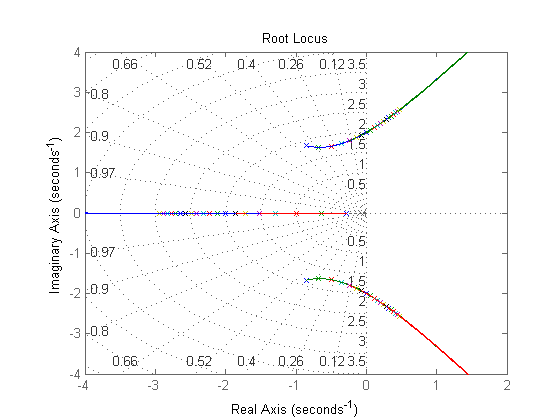

sobre
- Autor: Jonas Vieira de Souza
- Data: 30/09/2018
- Objetivo: Avaliar estabilidade de sistemas
Contents
configurações iniciais
limpar figuras, variáveis e console
close all;
clear;
clc;
verificar raízes e polos
- varia o ganho K
- fecha a malha entre G1(s) e G2(s)
- tabula as raízes
- compara os polos no plano s
s = tf('s'); den1 = (s^3 + 2*s^2 + 4*s); G1 = 1/den1; G2 = 1; % vetor de ganho k k_start = 1; k_step = 1; k_last = 20; k_size = ((k_last-k_start)/k_step) + 1; k_array = k_start:k_step:k_last; % tabela de armazenamento das raízes table_raizes = cell2table( ... cell(k_size,4), ... 'VariableNames', {'k', 'raiz_real', 'raiz_compl_SPS', 'raiz_compl_SPI'} ... ); fprintf('processando'); for i = 1:(k_size) fprintf('.'); G1 = k_array(i)/den1; sys = feedback(G1,G2); [nums,dens] = tfdata(sys,'v'); % raízes da equação característica raizes_ec = roots(dens); table_raizes.k{i} = k_array(i); % ajustar ordem dos resultados if imag( raizes_ec(3,1) ) == 0 table_raizes.raiz_real{i} = raizes_ec(3,1); table_raizes.raiz_compl_SPS{i} = raizes_ec(1,1); table_raizes.raiz_compl_SPI{i} = raizes_ec(2,1); else table_raizes.raiz_real{i} = raizes_ec(1,1); table_raizes.raiz_compl_SPS{i} = raizes_ec(2,1); table_raizes.raiz_compl_SPI{i} = raizes_ec(3,1); end % agregar polos no plano S rlocusplot(sys); hold on; end % zoom na região de análise no gráfico axis([-4 2 -4 4]); grid on; % apresentar raízes das equações características table_raizes(1:k_size,:)
processando....................
ans =
k raiz_real raiz_compl_SPS raiz_compl_SPI
____ _________ ___________________ ___________________
[ 1] [-0.2848] [-0.8576 + 1.6661i] [-0.8576 - 1.6661i]
[ 2] [-0.6389] [-0.6806 + 1.6332i] [-0.6806 - 1.6332i]
[ 3] [ -1] [-0.5000 + 1.6583i] [-0.5000 - 1.6583i]
[ 4] [-1.2956] [-0.3522 + 1.7214i] [-0.3522 - 1.7214i]
[ 5] [-1.5260] [-0.2370 + 1.7946i] [-0.2370 - 1.7946i]
[ 6] [-1.7113] [-0.1443 + 1.8669i] [-0.1443 - 1.8669i]
[ 7] [-1.8664] [-0.0668 + 1.9355i] [-0.0668 - 1.9355i]
[ 8] [-2.0000] [-0.0000 + 2.0000i] [-0.0000 - 2.0000i]
[ 9] [-2.1179] [ 0.0589 + 2.0606i] [ 0.0589 - 2.0606i]
[10] [-2.2236] [ 0.1118 + 2.1177i] [ 0.1118 - 2.1177i]
[11] [-2.3198] [ 0.1599 + 2.1717i] [ 0.1599 - 2.1717i]
[12] [-2.4082] [ 0.2041 + 2.2229i] [ 0.2041 - 2.2229i]
[13] [-2.4902] [ 0.2451 + 2.2717i] [ 0.2451 - 2.2717i]
[14] [-2.5667] [ 0.2833 + 2.3182i] [ 0.2833 - 2.3182i]
[15] [-2.6386] [ 0.3193 + 2.3628i] [ 0.3193 - 2.3628i]
[16] [-2.7064] [ 0.3532 + 2.4056i] [ 0.3532 - 2.4056i]
[17] [-2.7707] [ 0.3854 + 2.4468i] [ 0.3854 - 2.4468i]
[18] [-2.8320] [ 0.4160 + 2.4866i] [ 0.4160 - 2.4866i]
[19] [-2.8904] [ 0.4452 + 2.5249i] [ 0.4452 - 2.5249i]
[20] [-2.9463] [ 0.4732 + 2.5621i] [ 0.4732 - 2.5621i]
